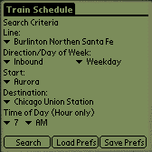
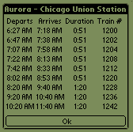
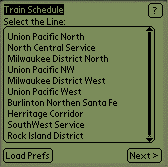
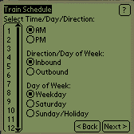
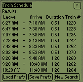

Palm OS Java Train Server
[Documentation] [Download] [Known Bugs] [History]
Note: This project is not current and does not run properly on current Palm hardware. This page is for historical purposes only.
Introduction
Java Train Schedule is a simple Java application written for the Palm OS platform. It allows the users an easy way to view commuter train schedules. Although this application was written for the Chicago Metra train system, there is no reason that data from other systems could not be loaded for this application.
Java Train Schedule is completely free. I wrote it as an introduction the Sun Microsystems' J2ME CLDC SDK, and the kAWT toolkit.
There are two separate versions of the TrainSchedule application. The initial version was written using the kAWT toolkit. Once I completed this, I ported the GUI to use the KVM GUI classes (kJava). While the kAWT version has much more sophisticated GUI, the kJava version performs much better. Both versions are included in the binary distribution.
In order to successfully port the application to the kJava classes, I found the ListBox widget written by Stepane Schmitz invaluable. You can find more information about this at his website.
If you are interested in Java development for the Palm and would like to see the source code for this application, you can email me at java@ericdaugherty.com.
Due to the constraints of the Java KVM, the limited power of the Palm hardware, and my limited interest, the performance of the TrainSchedule application is extremely slow. I would only recommend this application for the fastest Palm hardware, and the very patient! I have found that the kJava version is much more useable from a performance standpoint.
To download the binaries for the current version:
Version 1.0 - TrainSchedule1_0.zip
Currently only supports Chicago Metra's Burlington Northern Santa Fe and Union Pacific Northwest Lines, weekday schedules only. Please note, I do not guarantee the accuracy of this information, use it at your own risk. Although all the lines are listed in the application, searches performed on any lines besides the two listed above will fail.
You will also need the xKVM, which includes Sun's Java KVM and the kAWT class libraries to execute the kAWT version. If you just wish to run the kJava version, you can download and install KJava.prc and KjavaUtil.prc from here.
kAWT Version
Train Schedule is an easy to use application to access basic schedule information for commuter trains. he application consists of two main screens. The first screen prompts the user to input their search criteria. The second screen displays the results of the search.
 
Train Schedule determines all possible trains between your start and destination, and then filters out any trains that are undesirable (for example, trains that depart first but arrive after a later train).
Train Schedule also allows the user to define a preferred Line, Start and Destination. To save your preferences, select the appropriate values on the main screen, and select Save Prefs. Once you have done this, you can revert to these values at any time using the Load Prefs button. Also, each time the application loads, it will initially display the preferred values.
The Time of Day is set to the current hour when the application is launched. This field is not governed by the Load/Set Prefs feature.
kJava Version
Train Schedule is an easy to use application to access basic schedule information for commuter trains. he application consists of several data collection screens, and a results screen. The first screen prompts the user to input the line they are searching. After you make the selection, press the 'Next >' button to proceed to the next screen. Once all the data is entered, the Results Screen will be displayed.
  
Train Schedule determines all possible trains between your start and destination, and then filters out any trains that are undesirable (for example, trains that depart first but arrive after a later train).
Train Schedule also allows the user to define a preferred Line, Start and Destination. To save your preferences, select the appropriate values and perform a search. On the results screen, select Save Prefs. Once you have done this, you can revert to these values at any time using the Load Prefs button.
1.0 Final (2/2/2001) - Initial Full Release
1.0 Beta (1/29/2001) - Initial Public Version